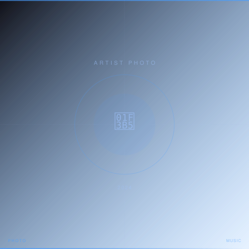

2024 / MUSIC / ARTIST
katawara — メジャー1stアルバム アーティスト写真・CDジャケット
katawara / メジャーレーベル
インディーズ時代から継続的に撮影を担当してきたアーティスト「katawara」のメジャー1stアルバムにおけるアーティスト写真とCDジャケット撮影を担当。メジャーデビューという節目に向けてのビジュアルアイデンティティ構築を全面的にサポート。
担当：スチール撮影 / アートディレクション補佐 / ライティング設計 / デジタル現像
Leica SL2, APO-SUMMICRON-SL 75mm f/2 ASPH.
- Photographer
- 森川亮太 (M.RYOHTA / @m_ichirinka)
- Artist
- katawara
Instagram: @m_ichirinka (2024.05.15) ↗

